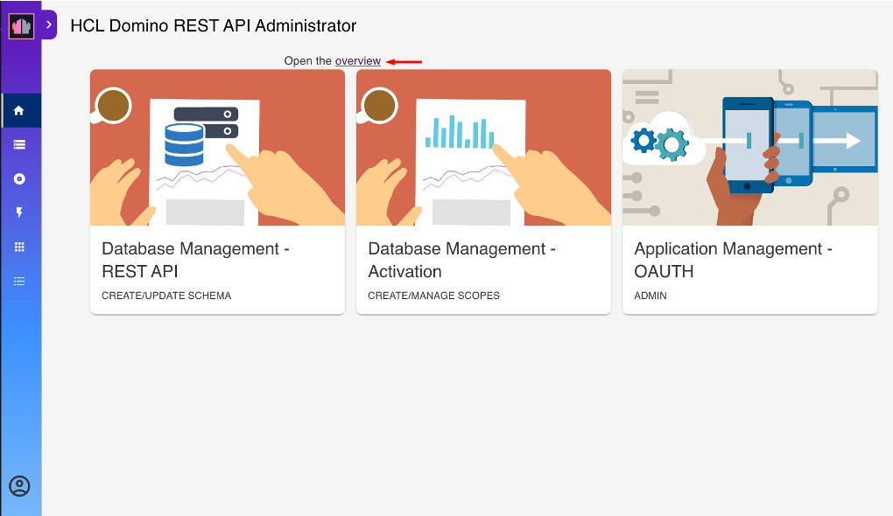

Using Admin UI
Overview
This tutorial provides step-by-step instructions for using the Admin UI to configure and manage a Domino database. It covers the preparation of database access, logging in, creation of schemas and scopes, configuration of database forms, views, and agents, and logging out.
Prepare database access
You can download and use the example Domino database Demo.nsf to complete this tutorial.
- Download
Demo.nsffrom Resources. - Save the
Demo.nsffile in the Notes data directory.
Video tutorial
You can watch the video for a visual walkthrough of using the Admin UI. The steps in the video closely follow the instructions in this topic and intend to serve as a visual reference to enhance your understanding. The video shows you the instructions for logging in to the Admin UI, creating schemas and scopes, managing database forms, views, and agents, and configuring activated forms.
Log in to Admin UI
-
Open your web browser and navigate to the Admin UI URL.
For example:
http://<your-host>:8880/admin/uiReplace
<your-host>with the actual hostname or IP address of your Domino REST API server. -
Enter your administrator username and password on the login page.
-
Click LOG IN WITH PASSWORD to proceed.
For more information on other log in options, see Log in options.
A successful login would lead to this landing page:

Tip
Starting with the Domino REST API v1.1.2 release, you can click Overview on the landing page, indicated by the red arrow in the image, to open the Domino REST API functional diagram. Clicking parts of the functional diagram directs you to corresponding topics in the documentation.
Create a schema
Schemas define what views, folders, documents, and agents you can access through the Domino REST API.
To create a schema:
- On the landing page, click Database Management - Rest API. This opens the Schema Management page.
-
On the Schema Management page, click Add Schema.

-
In the Add New Schema dialog, click Create Schema.

-
In the Create Schema dialog:
- Select
Demo.nsffrom the Database drop-down list. - Select an Icon.
- Enter a Schema Name and a Schema Description.
- Click Save Schema.
- Select
The created schema is now shown on the Schema Management page.
Note
If the Only show schemas configured with scopes toggle is turned on, you can't see the created schema because it doesn't have a scope yet.
Create a scope
A scope enables access to a schema via the Domino REST API. One Domino database can be made available under multiple scopes, such as with different security settings.
To create a scope:
-
In the side menu, click Scopes.

-
On the Scope Management page, click Add Scope.

This opens a pane as shown below:

-
Under Available Schema, click
Demo.nsf. This shows a list of schemas that usesDemo.nsfas a database. - Select the schema you created earlier.
-
Under Add New Scope, fill in the form and click Add.
For the Server field, enter the name of the server the scope is available on, or leave it blank for the current server. The value of the entered name must be either the server's hierarchical name or in canonical format. See the following examples for reference:
- MyServer/MyOrg
- CN=MyServer/O=MyOrg
Note
Accessing a scope on a different server will always return an HTTP 302 response. The server to be redirected to will be dictated by the
Fully qualified Internet hostnamefrom the server connection document of the server that owns the scope.For the Maximum Access Level, the default is Editor. You can set it to another value to set the scope's maximum access anyone using the scope has.

Note
The Maximum Access Level prevents an app that has inherited a user's access rights when the user grants the app access from unauthorized altering of schemas or access control lists. To know more about what each access level allows and to whom the access level is assigned, see Access levels in the ACL.
Manage database forms
To activate a form:
- In the side menu, click Schemas to go to the Schema Management page.
-
Click the schema you created earlier. This takes you to the page shown below:

This page allows you to set various configurations to your schema.
-
Click Database Forms from the menu bar. This lists all the forms available for the schema.
-
Select the form that you want to activate, click the corresponding menu icon beside the form's status, and then select Activate.

Tip
Clicking the menu icon and selecting Deactivate corresponding to a form deactivates the form. In the Reset Form dialog, click Yes to confirm.
To make changes to the activated form:
- On the Database Forms tab, click the pencil icon corresponding to the activated form that you want to edit to load the form Access Mode page showing the
defaultaccess mode. -
Under Show fields from, hover over a field item and click the + icon to add the field in the form. Repeat this for all the fields you want to add.

-
Set the Read or Write access formula for each of the fields in the form.
- Click Save.
To learn more, see Change form configuration.
Manage database views
- Click Database Views from the menu bar. This lists all the views for the selected database.
-
Select the view that you want to activate, and then click the corresponding Active option under Status.

Tip
Clicking the Inactive option corresponding to a view deactivates the view. On the Reset Views Columns dialog, click Yes to confirm deactivation of the view.
Manage database agents
-
Click Database Agents from the menu bar. This lists all the agents for the selected database.

-
Select the agent you want to activate, and then click the corresponding Active option under Status.
Tip
Clicking the Inactive option corresponding to an agent deactivates the agent.
Log out
When finished with your configurations, you can log out from the Admin UI.
- In the side menu, click the profile icon.
-
Select Sign Out to securely log out of the Admin UI.

Additional information
-
Everything you can perform via the Admin UI can also be done using Postman, curl, or Swagger UI. For more information, see the following tutorials:
-
Screenshots in the UI may vary depending on the version of Domino REST API you are using.